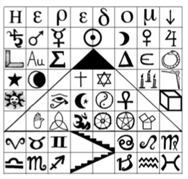

116. BÖLÜM
Enerji artıyordu.
Peter Solomon’ı sunağa doğru iterken, Mal’akh bu enerjinin, içinde aşağı yukarı hareket edip zonkladığını hissedebiliyordu. İçeri girdiğimden, sonsuza dek daha güçlü olarak bu binadan çıkacağım. Geriye kalan tek şey, son malzemenin yerini bulmaktı.
Kendi kendine, “Verbum significatium,” diye fısıldadı. “Verbum omnificum.”
Mal’akh, Peter’ın tekerlekli sandalyesini sunağın yanında durdurup, etrafından dolaştı ve Peter’ın kucağında duran ağır çantanın fermuarını açtı. Elini içine sokup, taş piramidi çıkardı ve Peter’ın tam önünde ay ışığına tuttu. Ona piramidin tabanına kazınmış sembol tablosunu gösterdi. “Geçen bunca yıla rağmen, piramidin, sırrını nasıl koruduğunu hâlâ anlayamamışsın,” diye alay etti. Piramidi dikkatle sunağın köşesine yerleştirdikten sonra yeniden çantaya döndü. Altın kapak taşını çıkarırken, “Ve bu tılsım, gerçekten de karmaşanın içinden düzen çıkardı, tıpkı vaat ettiği gibi,” dedi. Metal kapak taşını özenle taş piramidin üzerine yerleştirdikten sonra Peter’ın görebilmesi için geri çekildi. “Bak, bireşimin tamamlandı.”
Yüzünü çarpıtan Peter, boş yere konuşmaya çalıştı.
“Güzel. Görüyorum ki bana söyleyecek bir şeyin var.” Mal’akh, kurbanının ağzındaki tıkacı sertçe çekip çıkardı.
Peter Solomon konuşmaya başlamadan önce bir süre öksürüp, sık nefesler aldı. “Katherine...”
“Katherine ölmek üzere. Onu kurtarmak istiyorsan, sana söylediklerimi aynen yapmanı tavsiye ederim.” Mal’akh, onun şimdiye kadar çoktan öldüğünü veya ölmeye yakın olduğunu düşünüyordu. Zaten fark etmezdi. Ağabeyine hoşça kal diyecek kadar yaşayabildiği için şanslıydı.
Peter boğuk bir sesle, “Lütfen,” diye yalvardı. “Ona bir ambulans gönder.”
“Ben de bunu yapacağım. Ama önce sen bana gizli merdivene nasıl gidileceğini söyleyeceksin.”
Peter’ın ifadesi şaşkınlığa dönüştü. “Ne?!”
“Merdiven... Mason efsanesi, Kayıp Kelime’nin gömülü olduğu, toprağın yüzlerce metre altındaki gizli yere inen merdivenden bahseder.”
Peter şimdi telaşa kapılmış görünüyordu.
Mal’akh, “Efsaneyi biliyorsun,” diye yem attı. “Bir taşın altında saklı olan gizli merdiven.” Ortadaki sunağı gösterdi. Büyük granit levhanın üstünde yaldızlı harşerle İbranice şöyle yazıyordu: TANRI ‘IŞIK OLSUN’ DEDİ VE IŞIK OLDU. “Buranın doğru yer olduğu belli. Merdivenin girişi, aşağıdaki katlardan birinde gizli olmalı.”
Peter, “Bu binada gizli merdiven falan yok!” diye bağırdı.
Sabırla gülümseyen Mal’akh yukarıyı gösterdi. “Bu bina piramit şeklinde yapılmış.” Ortadaki kare şeklindeki pencereye belli bir açıyla yükselen, dört tarafı kemerli tavanı işaret etti.
“Evet, Mabet Evi bir piramit ama bunun...”
“Peter, bütün gece vaktim var.” Mal’akh, üzerindeki beyaz ipek sabahlığı düzeltti. “Ama Katherine’in yok. Onun yaşamasını istiyorsan, merdivene nasıl gidileceğini bana söyleyeceksin.”
“Sana zaten söyledim,” dedi. “Bu binada gizli merdiven yok.”
“Yok mu?” Mal’akh, piramidin tabanındaki sembolleri yeniden düzenleyip yerleştirdiği kâğıdı çıkardı. “Mason Piramidi’nin son mesajı bu. Deşifre etmeme arkadaşın Robert Langdon yardım etti.”
Mal’akh kâğıdı kaldırıp, Peter’ın yüzüne yaklaştırdı. Üstadı Muhterem kâğıdı gördüğünde içini çekti. Altmış dört sembol anlam ifade edecek şekilde gruplandırılmış... ve karmaşanın içinden gerçek bir resim çıkmıştı.
Piramidin altında duran bir merdiven resmi.
Peter Solomon karşısındaki sembol tablosuna hayretle baktı. Mason Piramidi sırrını nesiller boyunca saklamıştı. Şimdi birdenbire örtüsü kalkıyordu. Karın boşluğunda içine soğuk bir şeylerin dolduğunu hissetti.
Piramidin son şifresi.
İlk bakışta bu sembollerin gerçek anlamı Peter için gizemini korusa da sonradan dövmeli adamın inandığı şeye neden inandığını hemen anladı.
Heredom isimli piramidin altında gizli bir merdiven olduğuna inanıyor.
Sembolleri yanlış anlıyor.

Dövmeli adam, “Nerede?” diye sordu. “Merdiveni nasıl bulacağımı bana söyle, ben de Katherine’i kurtarayım.”
Peter, keşke bunu yapabilseydim, diye düşündü. Ama merdiven gerçek değil. Merdiven efsanesi tamamıyla sembolikti... Masonluktaki alegorilerin bir parçasıydı. Bilinen ismiyle, Sarmal Merdiven, ikinci derece işaret tahtasında79 yer alırdı. İnsanın İlahi Gerçek’e yükselişini temsil ederdi. Sarmal Merdiven, Yakup’un merdiveni gibi, cennete giden yolun sembolüydü... insanın Tanrı’ya yaptığı yolculuktu... dünyevi ve ruhani dünyalar arasındaki bağlantıydı. Basamakları, zihnin çeşitli erdemlerini temsil ederdi.
Peter, bunu bilmeliydi, diye düşündü. Tüm ikaf törenlerine katıldı.
Her mason üye, “insan biliminin gizemlerinde rol almasını” sağlayacak, sembolik merdivenden çıkacağını öğrenirdi. Noetik Bilim ve Antik Gizemler gibi farmasonluk da insan zihninin henüz kullanılmayan potansiyeline hürmet ederdi. Ayrıca masonik sembollerinin pek çoğu insan fizyolojisiyle ilgiliydi.
Zihin, fiziksel bedenin üstünde altın bir kapak taşı gibi durur. Felsefe Taşı budur. Enerji, belkemiği merdiveninde aşağı yukarı dolaşıp, ilahi zihni fiziksel vücuda bağlar.
Peter, belkemiğinin tam otuz üç omurgadan oluşmasının bir rastlantı olmadığını biliyordu. Masonluğun otuz üç derecesi vardır. Belkemiğinin en altı veya sacrum, “kutsal kemik” anlamına gelirdi. Vücut gerçekten de bir tapınaktır. Masonların hürmet ettiği insan bilimi, bu tapınağın en güçlü ve soylu amaç için nasıl kullanılacağı anlayışıydı.
Ne yazık ki, bu adama gerçeği açıklamanın Katherine’e faydası olmayacaktı. Bakışlarını sembol tablosuna indiren Peter, yenilgiye uğramış gibi içini çekti. “Haklısın,” diye yalan söyledi. “Bu binanın altında gerçekten de bir merdiven var. Katherine’e yardım gönderdiğin anda seni oraya götüreceğim.”
Dövmeli adam, ona bakmakla yetindi.
Solomon meydan okuyan gözleriyle ona ateş püskürdü. “Ya kız kardeşimi kurtarıp gerçeği öğrenirsin... ya da ikimizi birden öldürüp sonsuza kadar cahil kalırsın!”
Adam kâğıdı yavaşça aşağı indirerek başını iki yana salladı. “Senden memnun değilim Peter. Sınavı geçemedin. Hâlâ beni kandırmaya çalışıyorsun. Aradığım şeyin ne olduğunu bilmediğimi mi sanıyorsun? Gerçek potansiyeli henüz anlayamadığımı mı sanıyorsun?”
Adam bunları söyledikten sonra, arkasını dönüp sabahlığını aşağı kaydırdı. Beyaz ipek dalgalanarak yere düşerken, Peter ilk defa adamın belkemiğinin üstündeki uzun dövmeyi gördü.
Yüce Tanrım...
Beyaz örtünün üstünde, zarif bir sarmal merdiven sırtının ortasına kadar yükseliyordu. Basamaklardan her biri, farklı bir omurun üzerine yerleştirilmişti. Nutku tutulan Peter, merdiveni adamın kafatasına kadar gözleriyle takip etti.
Peter bakmaktan başka bir şey yapamıyordu.
Dövmeli adam tıraşlı başını arkaya atıp kafatasının tepesindeki çıplak deriyi ona gösterdi. Bu el değmemiş derinin etrafında, kendi kuyruğunu yutan halka şeklinde bir yılan vardı.
Bir olma.
Adam yavaşça başını eğip, yüzünü Peter’a döndü. Göğsündeki çift başlı anka kuşu, ölü gözleriyle ona bakıyordu.
Adam, “Kayıp Kelime’yi arıyorum,” dedi. “Bana yardım edecek misin... yoksa sen ve kız kardeşin ölecek misiniz?”
Mal’akh, nasıl bulunacağını biliyorsun, diye düşündü. Bana söylemediğin bir şey biliyorsun.
Peter Solomon sorgulama sırasında, şu anda hatırlamadığı bir şeyler açıklamış olmalıydı. Duyusal yoksunluk tankına girip çıkmak, onu kendinden geçirmiş ve itaatkâr kılmıştı. Ağzındaki baklayı çıkarırken, Mal’akh’a anlattığı her şey, Kayıp Kelime efsanesiyle uyumluydu.
Kayıp Kelime mecazi bir anlatım değil... gerçek. Eski bir dilde yazıldı ve asırlarca saklandı. Gerçek anlamını kavrayacak kişiye hayal edilemeyecek bir güç verme potansiyeline sahip.
Esirinin gözlerine bakan Mal’akh, “Peter,” dedi. “Sembol tablosuna baktığında... bir şey gördün. Aklına bir şey geldi. Bu tablo sana bir şey ifade ediyor. Bana söyle.”
“Katherine’e yardım gönderene kadar sana hiçbir şey söylemeyeceğim!”
Mal’akh, ona gülümsedi. “İnan bana, kız kardeşini kaybetmek, şu anda en son kaygılanman gereken şey.” Başka bir şey söylemeden Langdon’ın çantasına döndü ve kendi evinin bodrumunda paketlediği gereçleri çıkarmaya başladı. Daha sonra, adak sunağının üzerine özenle yerleştirmeye başladı.
Katlanmış bir ipek örtü. Bembeyaz.
Gümüş bir buhurdan. Mısır’dan mürrüsafi.80
Peter’ın kanının durduğu bir şişe. Külle karışmış.
Siyah karga tüyü. Kutsal kalemi.
Adak bıçağı. Kenan Çölü’ndeki meteoritin demirinden dövülmüş.
Sesi keder yüklü olan Peter, “Ölmekten korktuğumu mu sanıyorsun?” diye bağırdı. “Katherine ölürse, hiçbir şeyim kalmaz! Bütün ailemi öldürdün! Benden her şeyimi aldın!”
Mal’akh, “Her şeyini almadım,” diye cevap verdi. “Henüz almadım.” Çantaya uzanarak çalışma odasından getirdiği dizüstü bilgisayarını çıkardı. Bilgisayarı açıp esirine baktı. “Korkarım, içinde bulunduğun müşkül durumu henüz kavrayamadın.”